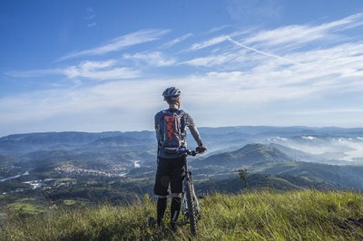
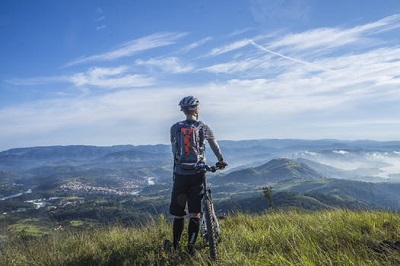

Ride the longest off-pavement route in the world.
The Great Divide Mountain Bike Route (GDMBR) is Adventure Cycling's premier off-pavement cycling route, crisscrossing the Continental Divide north to south. This route is defined by the word "remote." Its remoteness equates with spectacular terrain and scenery. The entire route is basically dirt-road and mountain-pass riding every day. In total, it has over 200,000 feet of elevation gain. Roughly 80% of it is composed of county, Forest Service (USFS), and Bureau of Land Management (BLM) dirt and gravel roads. The remainder is made up of four-wheel-drive tracks and singletrack trails (10%), and paved roads (10%).